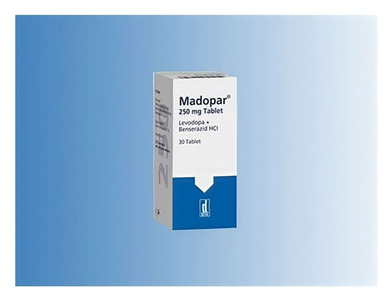

Madopar 250 mg Tablet, 30 Adet

Ne için kullanılır
KT · Bölüm 1MADOPAR tabletler levodopa ve benserazid adı verilen iki ilaç içermektedir. Parkinson hastalığını tedavi etmek için kullanılır.
Parkinson hastalığı olan kişilerin beyinlerinin belli kısımlarında yeterli dopamin bulunmamaktadır. Bu durum, hareketlerin yavaşlamasına, kasların katılaşmasına ve titremeye yol açabilir.
MADOPAR, şu şekilde etki eder: Vücudunuzda, levodopa dopamine çevrilir. Dopamin, parkinson hastalığının tedavi edilmesi için, beyninizin ihtiyacı olan etkin ilaçtır. Benserazid, dopamine dönüşmeden önce daha fazla levodopanın beyninize girmesini sağlar.